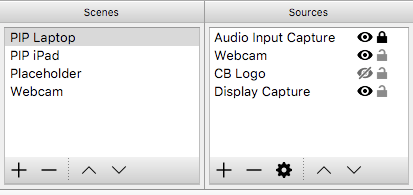
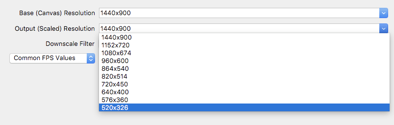
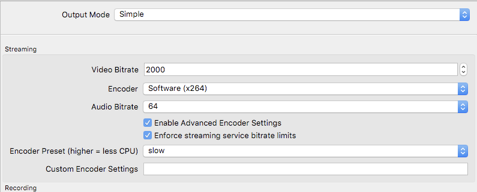

2. Recording Software
2.1 Only Screen Recording
If you are only recording the screen (without combining webcam video source in Picture-in-Picture or split screen format), there are some inbuilt solutions. Although on Windows to record the entire desktop you'll need custom programs, but to record only a particular window, there is in-built support.
2.1.1 Windows: Recoring with Game Bar
- Open your IDE or text editor or whatever program you want to record.
- Press
Win+G - Accept the "Yes this is a game" checkbox.
- Click the red button to start recording (or
Win+Alt+R) - Click the red bar again to stop recording.
2.1.2 Mac: QuickTime Screen Recording
- Open Quick Time
- Go to File > New Screen Recording
- You can record part of the screen or the entire screen
2.2 Multi-source Recording
If you want to record not just screen but multiple sources like screen, webcam, and/or externally connected mobile or tablet screen, then it is best to use a dedicated video capturing software. OBS is what we recommend most.
2.2.1 OBS (Open Broadcaster Software)
OBS can record from
- Screen
- Connected camera like Webcam
- A file or URL stream
OBS can record to a file or it can directly livestream to Youtube / Twitch / Facebook Live.
A few recommendations and suggestions about OBS -
Create screens to quickly switch between setups like 'screen only' or 'screen + webcam' or 'webcam only'
Make sure the output resolution is minimum 720p. (Lower than that is not good quality for online course videos)
FPS can be 10 for screen or PiP. It should be above 15 for face-shots or else it feels jerky. Low FPS can help reduce size of video.
Make sure you have appropriate bitrates set
Video Bitrate
For 720p, 1800 to 2000
For 1080p 2400 to 2600
Audio Bitrate
- 64 is fine, if there is distortion use 128